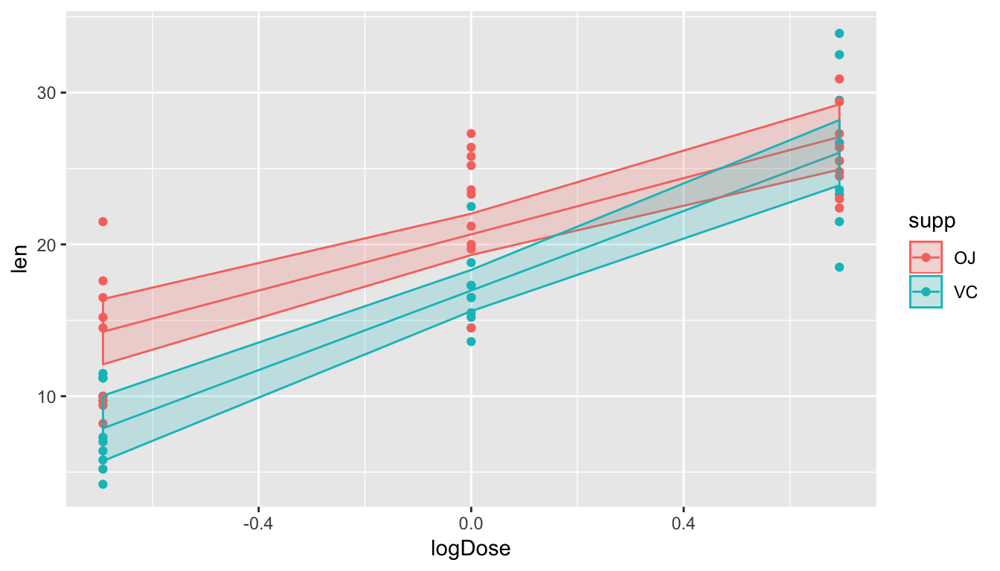
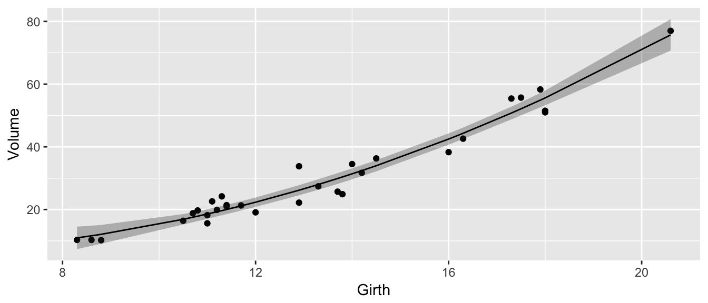
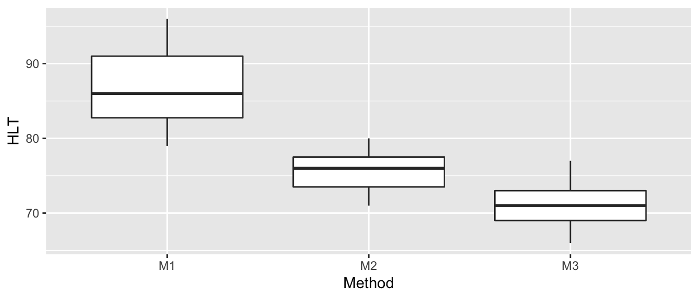
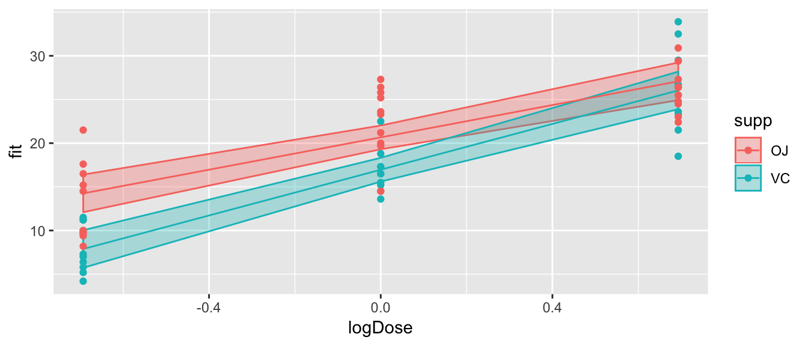
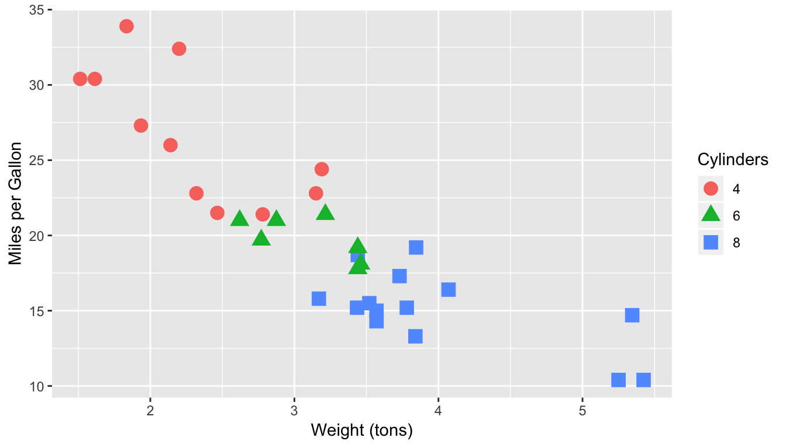

Chapter 5 Contrasts
library(tidyverse) # ggplot2, dplyr, tidyr
library(emmeans) # for emmeans()
library(multcomp) # for glht() We often are interested in estimating a function of the parameters \(\boldsymbol{\beta}\). For example in the offset representation of the ANOVA model with 3 groups we have \[y_{ij}=\mu+\tau_{i}+\epsilon_{ij}\] where \[ \boldsymbol{\beta}=\left[\mu\;\tau_{2}\;\tau_{3}\right]^{T} \] and \(\mu\) is the mean of the control group, group one is the control group and thus \(\tau_{1}=0\), and \(\tau_{2}\) and \(\tau_{3}\) are the offsets of group two and three from the control group. In this representation, the mean of group two is \(\mu+\tau_{2}\) and is estimated with \(\hat{\mu} + \hat{\tau}_2\).
5.1 Estimate and variance
A contrast is a linear combinations of elements of \(\boldsymbol{\hat{\beta}}\), which is a fancy way of saying that it is a function of the elements of \(\boldsymbol{\hat{\beta}}\) where the elements can be added, subtracted, or multiplied by constants. In particular, the contrast can be represented by the vector \(\boldsymbol{c}\) such that the function we are interested in is \(\boldsymbol{c}^{T}\boldsymbol{\hat{\beta}}\).
In the ANOVA case with \(k=3\) where we have the offset representation, I might be interested in the mean of group 2, which could be written as \[ \mu+\tau_{2}=\underset{\boldsymbol{c}^{T}}{\underbrace{\left[\begin{array}{ccc} 1 & 1 & 0\end{array}\right]}}\cdot\underset{\hat{\boldsymbol{\beta}}}{\underbrace{\left[\begin{array}{c} \hat{\mu}\\ \hat{\tau_{2}}\\ \hat{\tau_{3}} \end{array}\right]}} \]
Similarly in the simple regression case, I will be interested in the height of the regression line at \(x_0\). This height can be written as
\[
\hat{\beta}_{0}+\hat{\beta}_{1}x_{0}=\underset{\boldsymbol{c}^{T}}{\underbrace{\left[\begin{array}{cc}
1 & x_{0}\end{array}\right]}}\cdot\underset{\hat{\boldsymbol{\beta}}}{\underbrace{\left[\begin{array}{c}
\hat{\beta}_{0}\\
\hat{\beta}_{1}
\end{array}\right]}}
\] In this manner, we could think of the predicted values \(\hat{y}_i\) as just the result of the contrasts \(\boldsymbol{X} \hat{\boldsymbol{\beta}}\) where our design matrix takes the role of the contrasts.
One of the properties of maximum likelihood estimator (MLEs), is that they are invariant under transformations. Meaning that since \(\hat{\boldsymbol{\beta}}\) is the MLE of \(\boldsymbol{\beta}\), then \(\boldsymbol{c}^{T}\hat{\boldsymbol{\beta}}\) is the MLE of \(\boldsymbol{c}^{T}\boldsymbol{\beta}\). The only thing we need to perform hypotheses tests and create confidence intervals is an estimate of the variance of \(\boldsymbol{c}^{T}\hat{\boldsymbol{\beta}}\).
Because we know the variance of \(\hat{\boldsymbol{\beta}}\) is \[ Var\left(\hat{\boldsymbol{\beta}}\right)=\sigma^{2}\left(\boldsymbol{X}^{T}\boldsymbol{X}\right)^{-1} \] and because \(\boldsymbol{c}\) is a constant, then \[ Var\left(\boldsymbol{c}^{T}\hat{\boldsymbol{\beta}}\right)=\sigma^{2}\boldsymbol{c}^{T}\left(\boldsymbol{X}^{T}\boldsymbol{X}\right)^{-1}\boldsymbol{c} \] and the standard error is found by plugging in our estimate of \(\sigma^{2}\) and taking the square root. \[ StdErr\left(\boldsymbol{c}^{T}\hat{\boldsymbol{\beta}}\right) = \sqrt{\hat{\sigma}^{2}\boldsymbol{c}^{T}\left(\boldsymbol{X}^{T}\boldsymbol{X}\right)^{-1}\boldsymbol{c}} = \hat{\sigma}\sqrt{\boldsymbol{c}^{T}\left(\boldsymbol{X}^{T}\boldsymbol{X}\right)^{-1}\boldsymbol{c}} \]
As usual, we can now calculate confidence intervals for \(\boldsymbol{c}^{T}\hat{\boldsymbol{\beta}}\) using the usual formula \[Est \pm t_{n-p}^{1-\alpha/2}\;StdErr\left(\,Est\,\right)\] \[ \boldsymbol{c}^{T}\hat{\boldsymbol{\beta}} \pm t_{n-p}^{1-\alpha/2}\;\hat{\sigma}\sqrt{\boldsymbol{c}^{T}\left(\boldsymbol{X}^{T}\boldsymbol{X}\right)^{-1}\boldsymbol{c}} \]
Recall the hostility example which was an ANOVA with three groups with the data
| Method | Test Scores |
|---|---|
| 1 | 96 79 91 85 83 91 82 87 |
| 2 | 77 76 74 73 78 71 80 |
| 3 | 66 73 69 66 77 73 71 70 74 |
We have analyzed this data using both the cell means model and the offset and we will demonstrate how to calculate the group means from the offset representation. Thus we are interested in estimating \(\mu+\tau_{2}\) and \(\mu+\tau_{3}\). I am also interested in estimating the difference between treatment 2 and 3 and will therefore be interested in estimating \(\tau_{2} - \tau_{3}\).
y <- c(96,79,91,85,83,91,82,87,
77,76,74,73,78,71,80,
66,73,69,66,77,73,71,70,74)
groups <- factor(c( rep('Group1',8), rep('Group2',7),rep('Group3',9) ))We can fit the offset model and obtain the design matrix and estimate of \(\hat{\sigma}\) via the following code.
m <- lm(y ~ groups) # Fit the ANOVA model (offset representation)
coef(m) # Show me beta.hat## (Intercept) groupsGroup2 groupsGroup3
## 86.75000 -11.17857 -15.75000X <- model.matrix(m) # obtains the design matrix
sigma.hat <- summary(m)$sigma # create the summary table and grab sigma.hat
beta.hat <- coef(m)
XtX.inv <- solve( t(X) %*% X )Now we calculate
contr <- c(1,1,0) # define my contrast
ctb <- t(contr) %*% beta.hat
std.err <- sigma.hat * sqrt( t(contr) %*% XtX.inv %*% contr )
ctb## [,1]
## [1,] 75.57143std.err## [,1]
## [1,] 1.622994and notice this is the exact same estimate and standard error we got for group two when we fit the cell means model.
CellMeansModel <- lm(y ~ groups - 1)
summary(CellMeansModel)$coefficients## Estimate Std. Error t value Pr(>|t|)
## groupsGroup1 86.75000 1.518172 57.14108 1.567052e-24
## groupsGroup2 75.57143 1.622994 46.56296 1.117034e-22
## groupsGroup3 71.00000 1.431347 49.60364 2.993023e-235.2 Estimating contrasts using glht()
Instead of us doing all the matrix calculations ourselves, all we really need is to is specify the row vector \(\boldsymbol{c}^{T}\). The function that will do the rest of the calculations is the generalized linear hypothesis test function glht() that can be found in the multiple comparisons package multcomp. The p-values will be adjusted to correct for testing multiple hypothesis, so there may be slight differences compared to the p-value seen in just the regular summary table.
5.2.1 1-way ANOVA
We will again use the Hostility data set and demonstrate how to calculate the point estimates, standard errors and confidence intervals for the group means given a model fit using the offset representation.
y <- c(96,79,91,85,83,91,82,87,
77,76,74,73,78,71,80,
66,73,69,66,77,73,71,70,74)
groups <- factor(c( rep('Group1',8), rep('Group2',7),rep('Group3',9) ))
m <- lm(y ~ groups)
summary(m)$coefficients## Estimate Std. Error t value Pr(>|t|)
## (Intercept) 86.75000 1.518172 57.141079 1.567052e-24
## groupsGroup2 -11.17857 2.222377 -5.030008 5.583942e-05
## groupsGroup3 -15.75000 2.086528 -7.548424 2.063600e-07We will now define a row vector (and it needs to be a matrix or else glht() will throw an error. First we note that the simple contrast \(\boldsymbol{c}^{T}=\left[1\;0\;0\right]\) just grabs the first coefficient and gives us the same estimate and standard error as the summary did.
library(multcomp)
contr <- rbind("Intercept"=c(1,0,0)) # 1x3 matrix with row named "Intercept"
test <- glht(m, linfct=contr) # the linear function to be tested is contr
summary(test)##
## Simultaneous Tests for General Linear Hypotheses
##
## Fit: lm(formula = y ~ groups)
##
## Linear Hypotheses:
## Estimate Std. Error t value Pr(>|t|)
## Intercept == 0 86.750 1.518 57.14 <2e-16 ***
## ---
## Signif. codes: 0 '***' 0.001 '**' 0.01 '*' 0.05 '.' 0.1 ' ' 1
## (Adjusted p values reported -- single-step method)Next we calculate the estimate of all the group means \(\mu\), \(\mu+\tau_{2}\) and \(\mu+\tau_{3}\) and the difference between group 2 and 3. Notice I can specify more than one contrast at a time.
contr <- rbind("Mean of Group 1"=c(1,0,0),
"Mean of Group 2"=c(1,1,0),
"Mean of Group 3"=c(1,0,1),
"Diff G2-G3" =c(0,1,-1))
test <- glht(m, linfct=contr)
summary(test)##
## Simultaneous Tests for General Linear Hypotheses
##
## Fit: lm(formula = y ~ groups)
##
## Linear Hypotheses:
## Estimate Std. Error t value Pr(>|t|)
## Mean of Group 1 == 0 86.750 1.518 57.141 <0.001 ***
## Mean of Group 2 == 0 75.571 1.623 46.563 <0.001 ***
## Mean of Group 3 == 0 71.000 1.431 49.604 <0.001 ***
## Diff G2-G3 == 0 4.571 2.164 2.112 0.144
## ---
## Signif. codes: 0 '***' 0.001 '**' 0.01 '*' 0.05 '.' 0.1 ' ' 1
## (Adjusted p values reported -- single-step method)Finally we calculate confidence intervals in the usual manner using the confint() function.
confint(test, level=0.95)##
## Simultaneous Confidence Intervals
##
## Fit: lm(formula = y ~ groups)
##
## Quantile = 2.6455
## 95% family-wise confidence level
##
##
## Linear Hypotheses:
## Estimate lwr upr
## Mean of Group 1 == 0 86.7500 82.7337 90.7663
## Mean of Group 2 == 0 75.5714 71.2778 79.8650
## Mean of Group 3 == 0 71.0000 67.2134 74.7866
## Diff G2-G3 == 0 4.5714 -1.1534 10.29625.2.2 ANCOVA example
In the ANCOVA case, there are more interesting contrasts to be made. For this example we will use the ToothGrowth dataset. This data measuring the effects of different dose levels of vitamin C on tooth growth of guinea pigs. The two different delivery methods are encoded by the variable supp which has levels of orange juice (OJ) and ascorbic acid (VC).
We first fit a ANCOVA model with an interaction between log(dose) level and delivery method and graph the result.
data('ToothGrowth')
ToothGrowth$logDose <- log( ToothGrowth$dose )
m <- lm(len ~ logDose * supp, data=ToothGrowth)
# predict() gives me the yhat values and optional CI
# these are just the "contrasts" defined by X matrix!
ToothGrowth <- ToothGrowth %>%
dplyr::do(if(!is.null(.$fit)){dplyr::select(-fit,-upr,-lwr )}else{.}) %>%
cbind( predict(m, interval='confidence'))
# Plot the results using ggplot2
ggplot( ToothGrowth, aes(x=logDose, col=supp, fill=supp)) +
geom_point(aes(y=len)) +
geom_line(aes(y=fit)) +
geom_ribbon(aes(ymin=lwr, ymax=upr), alpha=.2)
R has fit this model using the offset representation. First we present the summary coefficients so we know which parameters are which.
summary(m)$coefficient## Estimate Std. Error t value Pr(>|t|)
## (Intercept) 20.663333 0.6791481 30.425371 1.629404e-36
## logDose 9.254889 1.2000095 7.712346 2.302639e-10
## suppVC -3.700000 0.9604605 -3.852319 3.033467e-04
## logDose:suppVC 3.844782 1.6970696 2.265542 2.736578e-02For a warm-up, we will calculate the y-intercepts of both groups and the slopes of both. For the OJ group, this is just the 1st and 2nd coefficients, while for the VC group it is \(\beta_{0}+\beta_{2}\) and \(\beta_{1}+\beta_{3}\).
# Add a heading so that I know which parameter is which!
# Int logDose suppVC logDose:suppVC
contr <- rbind("Intercept OJ" = c(1, 0, 0, 0 ),
"Slope OJ" = c(0, 1, 0, 0 ),
"Intercept VC" = c(1, 0, 1, 0 ),
"Slope VC" = c(0, 1, 0, 1 ) )
test <- glht(m, linfct=contr)
summary(test)##
## Simultaneous Tests for General Linear Hypotheses
##
## Fit: lm(formula = len ~ logDose * supp, data = ToothGrowth)
##
## Linear Hypotheses:
## Estimate Std. Error t value Pr(>|t|)
## Intercept OJ == 0 20.6633 0.6791 30.425 < 1e-10 ***
## Slope OJ == 0 9.2549 1.2000 7.712 3.18e-10 ***
## Intercept VC == 0 16.9633 0.6791 24.977 < 1e-10 ***
## Slope VC == 0 13.0997 1.2000 10.916 < 1e-10 ***
## ---
## Signif. codes: 0 '***' 0.001 '**' 0.01 '*' 0.05 '.' 0.1 ' ' 1
## (Adjusted p values reported -- single-step method)In our original table of summary coefficients, the (intercept) term corresponds to the tooth growth of a guinea pig when the logDose level is 0 (and therefore dose=1). If I wanted to estimate the tooth growth of a guinea pig fed OJ but with only \(1/2\) a dose (and therefore \(logDose=\log\left(1/2\right)=-0.69\)), then we want
\[\begin{aligned} \hat{y}_{oj,dose=0.5} & = \hat{\beta}_{0}+\hat{\beta}_{1}\log\left(0.5\right)\\ & = 20.6+9.25\log\left(0.5\right)\\ & = 20.6+9.25\left(-0.69\right)\\ & = 14.21 \end{aligned}\]
which I can write as \[y_{oj,dose=0.5} = \left[\begin{array}{cccc} 1 & -0.69 & 0 & 0\end{array}\right]\left[\begin{array}{c} \hat{\beta_{0}}\\ \hat{\beta}_{1}\\ \hat{\beta}_{2}\\ \hat{\beta}_{3} \end{array}\right] = \boldsymbol{c}_{1}^{T}\hat{\boldsymbol{\beta}}\]
To calculate the same value for the VC group, we need the following contrast:
\[\begin{aligned} \hat{y}_{vc,dose=0.5} &= 16.9633+13.0997\,\log\left(0.5\right)\\ &= \left(20.66-3.7\right)+\left(9.25+3.8\right)\,\log\left(0.5\right)\\ &= \left(\hat{\beta}_{0}+\hat{\beta}_{2}\right)+\left(\hat{\beta}_{1}+\hat{\beta}_{3}\right)\,\left(-0.69\right)\\ &= \left[\begin{array}{cccc}1 & -0.69 & 1 & -0.69\end{array}\right]\left[\begin{array}{c} \hat{\beta_{0}}\\ \hat{\beta}_{1}\\ \hat{\beta}_{2}\\ \hat{\beta}_{3}\end{array}\right]\\ &= \boldsymbol{c}_{2}^{T}\hat{\boldsymbol{\beta}} \end{aligned}\]
# Int logDose suppVC logDose:suppVC
contr <- rbind("OJ; 1/2 dose" = c(1, -0.69, 0, 0 ),
"VC; 1/2 dose" = c(1, -0.69, 1, -0.69 ))
test <- glht(m, linfct=contr)
summary(test)##
## Simultaneous Tests for General Linear Hypotheses
##
## Fit: lm(formula = len ~ logDose * supp, data = ToothGrowth)
##
## Linear Hypotheses:
## Estimate Std. Error t value Pr(>|t|)
## OJ; 1/2 dose == 0 14.277 1.071 13.33 < 1e-10 ***
## VC; 1/2 dose == 0 7.925 1.071 7.40 1.51e-09 ***
## ---
## Signif. codes: 0 '***' 0.001 '**' 0.01 '*' 0.05 '.' 0.1 ' ' 1
## (Adjusted p values reported -- single-step method)Finally we might be interested in testing if there is a treatment difference between OJ and VC at a 1/2 dose level. So to do this, we want to calculate the difference between these two previous contrasts, i.e.
\[\begin{aligned} \boldsymbol{c}_{1}^{T}\hat{\boldsymbol{\beta}}-\boldsymbol{c}_{2}^{T}\hat{\boldsymbol{\beta}} &= \left(\boldsymbol{c}_{1}^{T}-\boldsymbol{c}_{2}^{T}\right) \hat{\boldsymbol{ \beta }} \\ &= \left(\left[\begin{array}{cccc} 1 & -0.69 & 0 & 0\end{array}\right]-\left[\begin{array}{cccc} 1 & -0.69 & 1 & -0.69\end{array}\right]\right)\hat{\boldsymbol{\beta}} \\ &= \left[\begin{array}{cccc} 0 & 0 & -1 & 0.69\end{array}\right]\hat{\boldsymbol{\beta}} \end{aligned}\]
and we can calculate
contr <- rbind("OJ - VC; 1/2 dose" = c(0, 0, -1, 0.69))
test <- glht(m, linfct=contr)
summary(test)##
## Simultaneous Tests for General Linear Hypotheses
##
## Fit: lm(formula = len ~ logDose * supp, data = ToothGrowth)
##
## Linear Hypotheses:
## Estimate Std. Error t value Pr(>|t|)
## OJ - VC; 1/2 dose == 0 6.353 1.514 4.195 9.83e-05 ***
## ---
## Signif. codes: 0 '***' 0.001 '**' 0.01 '*' 0.05 '.' 0.1 ' ' 1
## (Adjusted p values reported -- single-step method)When we do the same test, but at dose level 2 (logDose =\(\log2=0.69\)) we see that the difference is not statistically significant.
contr <- rbind("OJ - VC; dose 2" = c(0, 0, -1, -0.69))
test <- glht(m, linfct=contr)
summary(test)##
## Simultaneous Tests for General Linear Hypotheses
##
## Fit: lm(formula = len ~ logDose * supp, data = ToothGrowth)
##
## Linear Hypotheses:
## Estimate Std. Error t value Pr(>|t|)
## OJ - VC; dose 2 == 0 1.047 1.514 0.691 0.492
## (Adjusted p values reported -- single-step method)5.3 Using emmeans Package
Specifying the contrasts by hand is extremely difficult to do correctly and instead we would prefer to specify the contrasts using language like “create all possible pairwise contrasts” where each pair is just a subtraction. The R-package emmeans tries to simply the creation of common contrasts.
To show how to use the emmeans package, we’ll consider a bunch of common models and show how to address common statistical questions for each.
5.3.1 Simple Regression
There is a dataset built into R named trees which describes a set of \(n=31\) cherry trees and the goal is to predict the volume of timber produced by each tree just using the tree girth a 4.5 feet above the ground.
data(trees)
model <- lm( Volume ~ Girth, data=trees )
trees <- trees %>%
dplyr::do(if(!is.null(.$fit)){dplyr::select(-fit,-upr,-lwr )}else{.}) %>%
cbind( predict(model, interval='conf'))
ggplot(trees, aes(x=Girth, y=Volume)) +
geom_point() +
geom_ribbon( aes(ymin=lwr, ymax=upr), alpha=.3 ) +
geom_line( aes(y=fit) )
Using the summary() function, we can test hypotheses about if the y-intercept or slope could be equal to zero, but we might be interested in confidence intervals for the regression line at girth values of 10 and 12.
# We could find the regression line heights and CI using
# either predict() or emmeans()
predict(model, newdata=data.frame(Girth=c(10,12)), interval='conf' )## fit lwr upr
## 1 13.71511 11.44781 15.98240
## 2 23.84682 22.16204 25.53159emmeans(model, specs = ~Girth, at=list(Girth=c(10,12)) ) ## Girth emmean SE df lower.CL upper.CL
## 10 13.71511 1.1085761 29 11.44781 15.98240
## 12 23.84682 0.8237582 29 22.16204 25.53159
##
## Confidence level used: 0.95The emmeans() function requires us to specify the grid of reference points we are interested as well as which variable or variables we wish to separate out. In the simple regression case, the specs argument is just the single covariate.
We might next ask if the difference in volume between a tree with 10 inch girth is statistically different than a tree with 12 inch girth? In other words, we want to test \[ H_0:\; (\beta_0 + \beta_1\cdot10 ) - (\beta_0 + \beta_1 \cdot 12) = 0\] \[ H_a:\; (\beta_0 + \beta_1\cdot10 ) - (\beta_0 + \beta_1 \cdot 12) \ne 0\]
In this case, we want to look at all possible pairwise differences between the predicted values at \(10\) and \(12\).
emmeans(model, specs = pairwise~Girth,
at=list(Girth=c(10,12)) ) ## $emmeans
## Girth emmean SE df lower.CL upper.CL
## 10 13.71511 1.1085761 29 11.44781 15.98240
## 12 23.84682 0.8237582 29 22.16204 25.53159
##
## Confidence level used: 0.95
##
## $contrasts
## contrast estimate SE df t.ratio p.value
## 10 - 12 -10.13171 0.4947539 29 -20.478 <.0001Notice that if I was interested in 3 points, we would get all of the differences.
emmeans(model, specs = pairwise~Girth,
at=list(Girth=c(10,11,12)) ) ## $emmeans
## Girth emmean SE df lower.CL upper.CL
## 10 13.71511 1.1085761 29 11.44781 15.98240
## 11 18.78096 0.9447560 29 16.84872 20.71320
## 12 23.84682 0.8237582 29 22.16204 25.53159
##
## Confidence level used: 0.95
##
## $contrasts
## contrast estimate SE df t.ratio p.value
## 10 - 11 -5.065856 0.2473770 29 -20.478 <.0001
## 10 - 12 -10.131713 0.4947539 29 -20.478 <.0001
## 11 - 12 -5.065856 0.2473770 29 -20.478 <.0001
##
## P value adjustment: tukey method for comparing a family of 3 estimatesIn this very simple case, the slope parameter is easily available as a parameter value, but we could use the emtrends() function to obtain the slope.
emtrends( model, ~Girth, 'Girth' )## Girth Girth.trend SE df lower.CL upper.CL
## 13.24839 5.065856 0.247377 29 4.559914 5.571799
##
## Confidence level used: 0.95This output is a bit mysterious because because of the 13.248 component. What has happened is that emtrends is telling us the slope of the line at a particular point on the x-axis (the mean of all the girth values). While this doesn’t matter in this example, because the slope is the same for all values of girth, if we had fit a quadratic model, it would not.
model <- lm( Volume ~ poly(Girth, 2), data=trees ) # Girth + Girth^2
trees <- trees %>%
dplyr::select(Volume, Girth) %>%
cbind(predict(model, interval='conf'))
ggplot(trees, aes(x=Girth, y=Volume)) +
geom_point() +
geom_ribbon( aes(ymin=lwr, ymax=upr), alpha=.3 ) +
geom_line( aes(y=fit) )
emtrends( model, ~ poly(Girth,2), 'Girth',
at=list(Girth=c(10,11,12)) )## Girth Girth.trend SE df lower.CL upper.CL
## 10 3.029920 0.5041192 28 1.997278 4.062561
## 11 3.538995 0.3992560 28 2.721156 4.356834
## 12 4.048070 0.3028961 28 3.427616 4.668525
##
## Confidence level used: 0.955.3.2 1-way ANOVA
To consider the pairwise contrasts between different levels we will consider the college student hostility data again. A clinical psychologist wished to compare three methods for reducing hostility levels in university students, and used a certain test (HLT) to measure the degree of hostility. A high score on the test indicated great hostility. The psychologist used \(24\) students who obtained high and nearly equal scores in the experiment. Eight subjects were selected at random from among the \(24\) problem cases and were treated with method 1, seven of the remaining \(16\) students were selected at random and treated with method 2 while the remaining nine students were treated with method 3. All treatments were continued for a one-semester period. Each student was given the HLT test at the end of the semester, with the results show in the following table.
Hostility <- data.frame(
HLT = c(96,79,91,85,83,91,82,87,
77,76,74,73,78,71,80,
66,73,69,66,77,73,71,70,74),
Method = c( rep('M1',8), rep('M2',7), rep('M3',9) ) )ggplot(Hostility, aes(x=Method, y=HLT)) +
geom_boxplot()
To use the emmeans(), we again will use the pairwise command where we specify that we want all the pairwise contrasts between Method levels.
model <- lm( HLT ~ Method, data=Hostility )
emmeans(model, pairwise~Method)## $emmeans
## Method emmean SE df lower.CL upper.CL
## M1 86.75000 1.518172 21 83.59279 89.90721
## M2 75.57143 1.622994 21 72.19623 78.94663
## M3 71.00000 1.431347 21 68.02335 73.97665
##
## Confidence level used: 0.95
##
## $contrasts
## contrast estimate SE df t.ratio p.value
## M1 - M2 11.178571 2.222377 21 5.030 0.0002
## M1 - M3 15.750000 2.086528 21 7.548 <.0001
## M2 - M3 4.571429 2.163993 21 2.112 0.1114
##
## P value adjustment: tukey method for comparing a family of 3 estimates5.3.3 ANCOVA
We will return to the ToothGrowth dataset and calculate all the interesting contrasts we previously built by hand.
data('ToothGrowth')
ToothGrowth$logDose <- log( ToothGrowth$dose )
m <- lm(len ~ logDose * supp, data=ToothGrowth)
ToothGrowth <- ToothGrowth %>%
dplyr::do(if(!is.null(.$fit)){dplyr::select(-fit,-upr,-lwr )}else{.}) %>%
cbind( predict(m, interval='conf') )
ggplot(ToothGrowth, aes(x=logDose, color=supp, fill=supp)) +
geom_ribbon( aes(ymin=lwr, ymax=upr), alpha=.3 ) +
geom_line( aes(y=fit) ) +
geom_point( aes(y=len) )
First, lets get the y-intercept for each group. In the following code, the formula with the | supp part says that we want to do all the calculations for each level of the supplement types. The call to emmeans() calculates the response at logDose level 0. By passing the result of the emmeans() function call to the summary() function, we can tell the summary function to print out both the confidence intervals and t-tests.
emmeans(m, ~logDose | supp, at=list(logDose=0)) %>%
summary(infer=c(TRUE,TRUE))## supp = OJ:
## logDose emmean SE df lower.CL upper.CL t.ratio p.value
## 0 20.66333 0.6791481 56 19.30284 22.02383 30.425 <.0001
##
## supp = VC:
## logDose emmean SE df lower.CL upper.CL t.ratio p.value
## 0 16.96333 0.6791481 56 15.60284 18.32383 24.977 <.0001
##
## Confidence level used: 0.95Next we estimated the tooth growth for a guinea pig with a logdose = -.69 (i.e. dose=1/2) for both the OJ and VC supplements. We also wanted to calculate the contrast between the two supplement predictions.
emmeans(m, pairwise~logDose*supp, at=list(logDose=-.69)) %>%
summary(infer=c(TRUE,TRUE))## $emmeans
## logDose supp emmean SE df lower.CL upper.CL t.ratio p.value
## -0.69 OJ 14.27746 1.070905 56 12.13218 16.42274 13.332 <.0001
## -0.69 VC 7.92456 1.070905 56 5.77928 10.06984 7.400 <.0001
##
## Confidence level used: 0.95
##
## $contrasts
## contrast estimate SE df lower.CL upper.CL t.ratio
## -0.69,OJ - -0.69,VC 6.3529 1.514488 56 3.319016 9.386784 4.195
## p.value
## 0.0001
##
## Confidence level used: 0.95We next make the same comparison for logdose = 0.69 (i.e. dose=2).
emmeans(m, pairwise~logDose*supp, at=list(logDose=.69)) %>%
summary(infer=c(TRUE,TRUE))## $emmeans
## logDose supp emmean SE df lower.CL upper.CL t.ratio p.value
## 0.69 OJ 27.04921 1.070905 56 24.90393 29.19449 25.258 <.0001
## 0.69 VC 26.00211 1.070905 56 23.85683 28.14739 24.281 <.0001
##
## Confidence level used: 0.95
##
## $contrasts
## contrast estimate SE df lower.CL upper.CL t.ratio p.value
## 0.69,OJ - 0.69,VC 1.0471 1.514488 56 -1.986784 4.080984 0.691 0.4922
##
## Confidence level used: 0.95While emmeans() makes it very easy to calculate the \(\hat{y}\) value for some covariate combination or some difference of \(\hat{y}\) values, it doesn’t handle slope parameters particularly well. The companion function emtrends() is intended to make similar calculations among slopes easy to create. We will now assess the difference in slopes between the two groups.
emtrends(m, ~logDose*supp, var = 'logDose')## logDose supp logDose.trend SE df lower.CL upper.CL
## 0 OJ 9.254889 1.200009 56 6.850981 11.65880
## 0 VC 13.099671 1.200009 56 10.695763 15.50358
##
## Confidence level used: 0.95emtrends(m, pairwise~logDose*supp, var = 'logDose')## $emtrends
## logDose supp logDose.trend SE df lower.CL upper.CL
## 0 OJ 9.254889 1.200009 56 6.850981 11.65880
## 0 VC 13.099671 1.200009 56 10.695763 15.50358
##
## Confidence level used: 0.95
##
## $contrasts
## contrast estimate SE df t.ratio p.value
## 0,OJ - 0,VC -3.844782 1.69707 56 -2.266 0.02745.3.3.1 Common emmeans() mistake
It is very common to make a mistake using emmeans() or emtrends() if you don’t understand what the specification formula means. In particular what happens if you were to use ~logDose instead of the correct ~logDose*supp.
Consider the case where we are interested in making predictions for each supplement type at \(1/2\) dose (logDose=-0.69).
emmeans(m, ~logDose*supp, at=list(logDose=-.69))## logDose supp emmean SE df lower.CL upper.CL
## -0.69 OJ 14.27746 1.070905 56 12.13218 16.42274
## -0.69 VC 7.92456 1.070905 56 5.77928 10.06984
##
## Confidence level used: 0.95If I were to accidentally forget the supp part of this, then emmeans() would figure that I wanted to average over the two levels and give me the average of \(14.28\) and \(7.92\), which is \(11.1\). With the interaction term in the model, it is unlikely that I would want to do this, but emmeans() complains a little but lets me do it.
emmeans(m, ~logDose, at=list(logDose=-.69))## NOTE: Results may be misleading due to involvement in interactions## logDose emmean SE df lower.CL upper.CL
## -0.69 11.10101 0.757244 56 9.584068 12.61795
##
## Results are averaged over the levels of: supp
## Confidence level used: 0.95What would happen if we only use supp in the formula specification? In this case we are lucky because the logDose=-0.69 specified what dose level to look at. If we had forgotten to specify this, then we would have done this calculation at the mean logDose value, which happens to be zero.
emmeans(m, ~supp*logDose, at=list(logDose=0))## supp logDose emmean SE df lower.CL upper.CL
## OJ 0 20.66333 0.6791481 56 19.30284 22.02383
## VC 0 16.96333 0.6791481 56 15.60284 18.32383
##
## Confidence level used: 0.95emmeans(m, ~supp)## NOTE: Results may be misleading due to involvement in interactions## supp emmean SE df lower.CL upper.CL
## OJ 20.66333 0.6791481 56 19.30284 22.02383
## VC 16.96333 0.6791481 56 15.60284 18.32383
##
## Confidence level used: 0.95Because the averaging over factor levels isn’t what I typically want to do, I start the analysis making sure the model formula I used in the lm() command is the same as the one I pass into emmeans().
5.4 Exercises
We will examine a dataset that summarizes cars featured in the magazine Motor Trend during the year 1974. In particular we will examine the relationship between the vehicles gas mileage (
mpg) versus the weight (wt) and number of cylinders (cyl) of the vehicle.library(ggplot2) library(dplyr) data(mtcars) mtcars$cyl <- factor(mtcars$cyl) # treat cylinders as categorical ggplot(mtcars, aes(x=wt, col=cyl)) + geom_point(aes(y=mpg, shape=cyl), size=4) + xlab('Weight (tons)') + ylab('Miles per Gallon') + labs(color='Cylinders', shape='Cylinders')Create a smaller set of data with just 9 observations (3 from each cylinder group) and create the design matrix \(\boldsymbol{X}\) for fitting the the model for estimating mpg using both weight and number of cylinders and their interaction using the following code:
mtcars %>% group_by(cyl) %>% # For each cylinder group arrange(cyl, wt) %>% # Reorder my dataset slice(1:3) %>% # grab first three rows of each group lm( mpg ~ wt*cyl, data=. ) %>% # Linear model model.matrix()## (Intercept) wt cyl6 cyl8 wt:cyl6 wt:cyl8 ## 1 1 1.513 0 0 0.000 0.000 ## 2 1 1.615 0 0 0.000 0.000 ## 3 1 1.835 0 0 0.000 0.000 ## 4 1 2.620 1 0 2.620 0.000 ## 5 1 2.770 1 0 2.770 0.000 ## 6 1 2.875 1 0 2.875 0.000 ## 7 1 3.170 0 1 0.000 3.170 ## 8 1 3.435 0 1 0.000 3.435 ## 9 1 3.440 0 1 0.000 3.440 ## attr(,"assign") ## [1] 0 1 2 2 3 3 ## attr(,"contrasts") ## attr(,"contrasts")$cyl ## [1] "contr.treatment"Hint: the purpose of this step is to make sure everyone knows the column order of the design matrix so that you interprete the \(\beta\) terms in the correct order.
- Denote the coefficients obtained from the summary of your
lm()call as \(\hat{\beta}_{0}\) to \(\hat{\beta}_{5}\) (in the order given by R). Write your interaction model out using subscript notation and should be in the form \[y_{i}=\begin{cases} ??????? & \;\;\textrm{if 4 cylinder}\\ ??????? & \;\;\textrm{if 6 cylinder}\\ ??????? & \;\;\textrm{if 8 cylinder} \end{cases}\] and give an interpretation for each \(\beta_{j}\) value.- \(\hat{\beta}_0\) = ???
- \(\hat{\beta}_1\) = ???
- \(\hat{\beta}_2\) = ???
- \(\hat{\beta}_3\) = ???
- \(\hat{\beta}_4\) = ???
- \(\hat{\beta}_5\) = ???
Using the full dataset, fit the model that predicts mpg using both weight and number of cylinders and their interaction using the command
model <- lm(mpg ~ wt*cyl, data=mtcars)Create a vector of fitted values, add it to the data frame
mtcarsand then create a plot that includes the regression lines.What is the estimated mpg of a 6-cylinder vehicle weighing 3.5 tons? What is the estimated mpg of a 8-cylinder vehicle weight 3.5 tons? Give the associated 95% confidence intervals. Calculate these using the
predict()function. Warning: When making the new data frame, make sure that R interprets cyl as a factor by either coercing it to a factor after creation or inputing the cylinder as a string (i.e. as “6” instead of 6).Recalculate your answer to part (d) using the
glht()function. Also give the estimate and confidence interval for the difference in mpg betwen the 8 and 6 cylinder vehicles that weight 3.5 tones? Is there a statistically significant difference in mpg at 3.5 tons?Recalculate your answer to part (e) using the
emmeans()function.Are the slopes of the 8-cylinder and 6-cylinder vehicles statistically different? Use
glht()to produce this result.Recalculate your answer to part (g) using the
emtrends()function.